![Refraction of light from a plane transparent surface:
(a) A ray of light falls at a point separation of upper air medium and cover water medium at an angle i with normal drawn at that point, deviates towards the normal inside water is the angle between normal and reflected ray.
(b) When a ray of object passes from water to air at a point of separation at an angle i deviates away from normal drawn at that point is between normal and refracted ray.
(c) When a ray of light passes perpendicular to the length side of a rectangular glass slab refracts undeviated to the other length side.](images/image250.png)
After completing this lesson, students will be able to:
apply the laws of reflection for plane mirrors and spherical mirrors.
draw ray diagrams to find the position and size of the image for spherical mirrors.
distinguish between real and virtual images.
apply the mirror equation to calculate position, size and nature of images for spherical mirrors.
identify the direction of bending when light passes from one medium to another.
solve problems using Snell’s law.
predict whether light will be refracted or undergo total internal reflection.
Light is a form of energy which travels as electromagnetic waves. The branch of physics that deals with the properties and applications of light is called optics. In our day to day life we use number of optical instruments. Microscopes are inevitable in science laboratories. Telescopes, binoculars, cameras and projectors are used in educational, scientific and entertainment fields.
In this lesson, you will learn about spherical mirrors Bracket OPEN concave and convex bracket closed. Also, you will learn about the properties of light, namely reflection and refraction and their applications.
Light falling on any polished surface such as a mirror, is reflected. This reflection of light on polished surfaces follows certain laws and you have studied about them in your lower classes. Let us study about them little elaborately here.
Consider a plane mirror MM dash as shown in Figure 6.1. Let AO be the light ray incident on the plane mirror at O. The ray AO is called incident ray. The plane mirror reflects the incident ray along OB. The ray OB is called reflected ray. Draw a line ON at O perpendicular to MM dash. This line ON is called normal.
Figure 6.1 Plane mirror image was given below
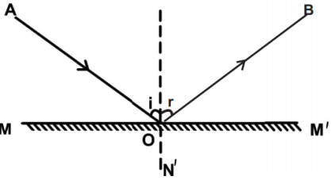
The angle made by the incident ray with the normal Bracket OPEN i = angle AON bracket closed is called angle of incidence. The reflected ray OB makes an angle Bracket OPEN r = angle NOB bracket closed with the normal and this is called angle of reflection. From the figure you can observe that the angle of incidence is equal to the angle of reflection. That is, angle of i = angle of r. Also, the incident ray, the reflected ray and the normal at the point of incidence all lie in the same plane. These are called the laws of reflection. Laws of reflection are given as:
The incident ray, the reflected ray and the normal at the point of incidence, all lie in the same plane.
The angle of incidence is equal to angle of reflection.
Box item open
The most common usage of mirror writing can be found on the front of ambulances, where the word "AMBULANCE" is often written in very large mirrored text. box item ends
You might have heard about inversion. But what is lateral inversion question mark The word lateral comes from the Latin word latus which means side. Lateral inversion means sidewise inversion. It is the apparent inversion of left and right that occurs in a plane mirror.
Why do plane mirrors reverse left and right, but they do not reverse up and down question mark Well, the answer is surprising. Mirrors do not actually reverse left and right and they do not reverse up and down also. What actually mirrors do is reverse inside out.
Look at the image below Bracket OPEN Figure 6.2 bracket closed and observe the arrows, which indicate the light ray from the object falling on the mirror. The arrow from the object’s head is directed towards the top of the mirror and the arrow from the feet is directed towards the bottom. The arrow from left hand goes to the left side of the mirror and the arrow from the right hand goes to the right side of the mirror. Here, you can see that there is no switching. It is an optical illusion. Thus, the apparent lateral inversion we observe is not caused by the mirror but the result of our perception.
Figure 6.2 Lateral inversion Image was given below
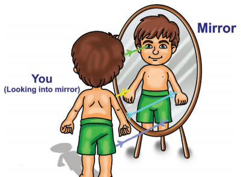
If the light rays coming from an object actually meet, after reflection, the image formed will be a real image and it is always inverted. A real image can be produced on a screen.
When the light rays coming from an object do not actually meet, but appear to meet when produced backwards, that image will be virtual image. The virtual image is always erect and cannot be caught on a screen Bracket OPEN Figure 6.3 bracket closed.
Figure 6.3 Real and virtual image was given below
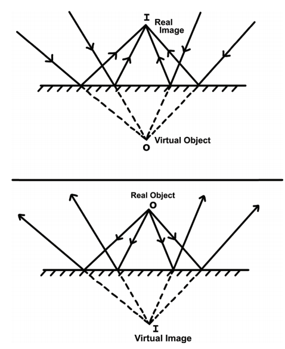
Box item open
Stand before the mirror in your dressing table or the mirror fixed in a steel almairah. Do you see your whole body question mark To see your entire body in a mirror, the mirror should be at least half of your height. Height of the mirror = Your height by 2.box item ends
We studied about laws of reflection. These laws are applicable to all types of reflecting surfaces including curved surfaces. In your earlier classes, you have studied that there are many types of curved mirrors, such as spherical and parabolic mirrors. The most commonly used type of curved mirror is spherical mirror.
In curved mirrors, the reflecting surface can be considered to form a part of the surface of a sphere. Such mirrors whose reflecting surfaces are spherical are called spherical mirrors.
In some spherical mirrors the reflecting surface is curved inwards, that is, it faces towards the centre of the sphere. They are called concave mirrors. In some other mirrors, the reflecting surface is curved outward. They are called convex mirror.
Box item open
Hold a concave mirror in your hand Bracket OPEN or place it in a stand bracket closed. Direct its reflecting surface towards the sun. Direct the light reflected by the mirror onto a sheet of paper held not very far from the mirror. Move the sheet of paper back and forth gradually until you find a bright, sharp spot of light on the paper. Position the mirror and the paper at the same location for few moments. What do you observe question mark Why does the paper catches fire question mark box item ends
We saw that the parallel rays of sun light could be focused at a point using a concave mirror. Now let us place a lighted candle and a white screen in front of the concave mirror. Adjust the position of the screen. Move the screen front and back. Note the size of the image and its shape. You can see a small and inverted image.
Slowly bring the candle closer to the mirror. What do you observe question mark As you bring the object closer to the mirror the image becomes bigger. Try to locate the image when you bring the candle very close to the mirror. Are you able to see an image on the screen question mark Now look inside the mirror. What do you see question mark An erect magnified image of the candle is seen. In some positions of the object an image is obtained on the screen. However, at some positions of the object no image is obtained. It is clear that the behaviour of the concave mirror is much more complicated than the plane mirror.
However, with the use of geometrical technique we can simplify and understand the behaviour of the image formed by a concave mirror. In the case of plane mirror, we used only two rays to understand how to get full image of a person. But, for understanding the nature of image formed by a spherical mirrors we need to look at four specific rules.
To find the position and nature of the image formed by a spherical mirror, we need to know the following rules.
Rule 1: A ray passing through the centre of curvature is reflected back along its own path Bracket OPEN Figure 6.4bracket closed.
Figure 6.4 Ray passing through centre of curvature image was given below
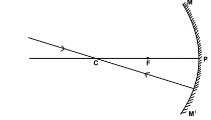
Rule 2: A ray parallel to the principal axis passes through or appears to be coming from the principal focus Bracket OPEN in case of convex mirror bracket closed after reflection Bracket OPEN Figure 6.5bracket closed.
Figure 6.5 Ray parallel to principal axis image was given below
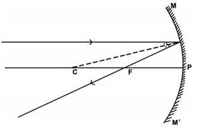
Rule 3: A ray passing through the focus gets reflected and travels parallel to the principal axis Bracket OPEN Figure 6.6 bracket closed.
Figure 6.6 Ray travelling through the principal focus image was given below
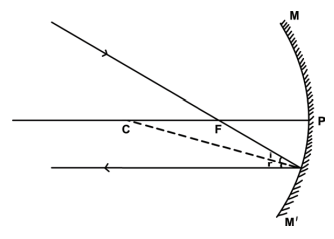
Rule 4: A ray incident at the pole of the mirror gets reflected along a path such that the angle of incidence Bracket OPEN APC bracket closed is equal to the angle of reflection Bracket OPEN BPC bracket closed Bracket OPEN Figure 6.7 bracket closed.
Figure 6.7 Angle of incidence equal to angle of reflection image was given below
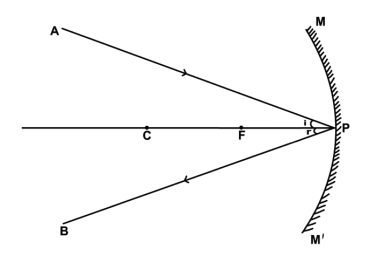
We shall now find the position, size and nature of image by drawing the ray diagram for a small linear object placed on the principal axis of a concave mirror at different positions.
Case 1: When the object is far away Bracket OPEN at infinity bracket closed, the rays of light reaching the concave mirror are parallel to each other Bracket OPEN Figure 6.8 a bracket closed.
Position of the Image: The image is formed at the principal focus F.
Nature of the Image: It is real, inverted and highly diminished in size.
Case 2: When the object is beyond the centre of curvature Bracket OPEN Figure 6.8bbracket closed.
Position of the image: Between the principal focus F and centre of curvature C.
Nature of the image: Real inverted and smaller than object.
Case 3: When the object is at the centre of curvature Bracket OPEN Figure 6.8 c bracket closed.
Position of the image: The image is at the centre of curvature itself.
Nature of the image: It is real, inverted and same size as the object.
Case 4: When the object is in between the centre of curvature C and principal focus F Bracket OPEN Figure 6.8 d bracket closed.
Position of the image: The image is beyond C
Nature of the image:It is real inverted and magnified.
Case 5: When the object is at the principal focus F Bracket OPEN Figure 6.8 e bracket closed.
Nature of the image: No image can be captured on the screen nor any virtual image can be seen.
Case 6: When the object is in between the focus F and the pole P Bracket OPEN Figure 6.8 f bracket closed.
Position of the image: The image is behind the mirror.
Nature of the image: It is virtual, erect and magnified.
Figure 6.8 Ray diagram for the images formed by concave mirror image was given below
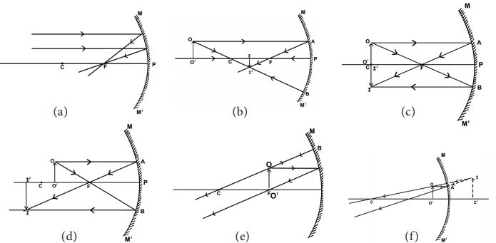
We follow a set of sign conventions called the cartesian sign convention to measure distances in ray diagram. In this convention, the pole Bracket OPEN P bracket closed of the mirror is taken as the origin. The principal axis is taken as the X-axis of the coordinate system Bracket OPEN Figure 6.9bracket closed.
The object is always placed on the left side of the mirror.
All distances are measured from the pole of the mirror
Distances measured in the direction of incident light are taken as positive and those measured in the opposite direction are taken as negative.
All distances measured perpendicular to and above the principal axis are considered to be positive.
All distances measured perpendicular to and below the principal axis are considered to be negative.
Figure 6.9 Sign convention for spherical mirrors image was given below
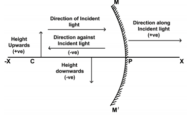
Table 6.1 Sign convention for spherical mirrors.was given below
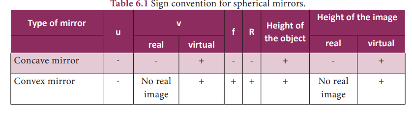
The expression relating the distance of the object Bracket OPEN u bracket closed, distance of the image Bracket OPEN v bracket closed and the focal length Bracket OPEN f bracket closed of a spherical mirror is called the mirror equation. It is given as:
1 by f = 1 by u plus 1 by v
Magnification produced by a spherical mirror gives how many times the image of an object is magnified with respect to the object size.
It can be defined as the ratio of the height of the image Bracket OPEN hi bracket closed to the height of the object Bracket OPEN ho bracket closed
m = hi by ho
The magnification can be related to object distance Bracket OPEN u bracket closed and the image distance Bracket OPEN v bracket closed
m = minus v by u
That is, m = hi by ho = minus v by u
Note: A negative sign in the value of magnification indicates that the image is real. A positive sign in the value of magnification indicates that the image is virtual.
Box item open
Find the size, nature and position of the image formed when an object of size 1 cm is placed at a distance of 15 cm from a concave mirror of focal length 10 cm.
Solution:
Object distance, u = minus 15 cm Bracket OPEN to the left of mirror bracket closed
Image distance, v = question mark
Focal length, f = minus 10 cm Bracket OPEN concave mirror bracket closed
Using mirror formula
1 by v plus 1 by u = 1 by f
1 by v plus 1 by minus 15 = 1 by minus 10
1 by v minus 1 by 15 = minus 1 by 10
1 by v = minus 1 by 10 plus 1 by 15 = minus 3 plus 2 by 30 = minus 1 by 30
Thus, image distance, v = minus 30 cm Bracket OPEN negative sign indicates that the image is on the left side of the mirror bracket closed.
Therefore Position of image is 30 cm in front of the mirror. Since the image is in front of the mirror, it is real and inverted.
To find the size of the image, we have to calculate the magnification.
M = minus v by u = minus of minus 30 by minus 15 = minus 2
We Know that, m = h2 by h1
Here, height of the object h1 = 1 cm
minus 2 = h2 by 1
h2 = minus 2 into 1 = minus 2 cm
The height of image is 2 cm Bracket OPEN negative sign shows that the image is formed below the principal axis bracket closed. box item ends
Box item open
An object 2 cm high is placed at a distance of 16 cm from a concave mirror which produces a real image 3 cm high. Find the position of the image.
Solution:
Height of object h1 = 2 cm
Height of real image h2 = minus 3 cm
Magnification
m = h2 by h1 = minus 3 by 2 = minus 1.5
We know that, m = minus v by u
Here, object distance u = minus 16 cm
Substituting the value, we get
minus 1.5 = minus v by bracket open minus 16 bracket closed
minus 1.5 = v by 16
v = 16 × Bracket OPEN minus 1.5 bracket closed = minus 24 cm
The position of image is 24 cm in front of the mirror Bracket OPEN negative sign indicates that the image is on the left side of the mirror bracket closed. Box item ends
Dentist’s head mirror: In dentist’s head mirror, a parallel beam of light is made to fall on the concave mirror. This mirror focuses the light beam on a small area of the body Bracket OPEN such as teeth, throat etc. bracket closed.
Make-up mirror: When a concave mirror is held near the face, an upright and magnified image is seen. Here, our face will be seen magnified.
Other applications: Concave mirrors are also used as reflectors in torches, head lights in vehicles and search lights to get powerful beams of light. Large concave mirrors are used in solar heaters.
Box item open
Stellar objects are at an infinite distance. Therefore, the image formed by a concave mirror would be diminished, and inverted. Yet, astronomical telescopes use concave mirrors. box item ends
Any two rays can be chosen to draw the position of the image in a convex mirror Bracket OPEN Figure 6.10 bracket closed: a ray that is parallel to the principal axis Bracket OPEN rule 1bracket closed and a ray that appears to pass through the centre of curvature Bracket OPEN rule 2bracket closed.
Note: All rays behind the convex mirror shall be shown with dotted lines
Figure 6.10 Image formation in a convex mirror image was given below
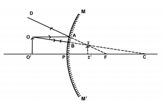
The ray OA parallel to the principal axis is reflected along AD. The ray OB retraces its path. The two reflected rays diverge but they appear to intersect at I when produced backwards. Thus I I dash is the image of the object O O dash. It is virtual, erect and smaller than the object.
Box item open
Take a convex mirror. Hold it in one hand. Hold a pencil close to the mirror in the upright position in the other hand. Observe the image of the pencil in the mirror. Is the image erect or inverted question mark Is it diminished or enlarged question mark Move the pencil slowly away from the mirror. Does the image become smaller or larger question mark What do you observe question mark Box item ends
Convex mirrors are used as rear-view mirrors in vehicles. It always forms a virtual, erect, small-sized image of the object. As the vehicles approach the driver from behind, the size of the image increases. When the vehicles are moving away from the driver, then image size decreases. A convex mirror provides a much wider field of view Bracket OPEN it is the observable area as seen through eye / any optical device such as mirror bracket closed compared to plane mirror.
Convex mirrors are installed on public roads as traffic safety device. They are used in acute bends of narrow roads such as hairpin bends in mountain passes where direct view of oncoming vehicles is restricted.It is also used in blind spots in shops.
In the rear view mirror, the following sentence is written. “Objects in the mirror are closer than they appear”. Why question mark Box item ends
A car is fitted with a convex mirror of focal length 20 cm. Another car is 6 m away from the first car. Find the position of the second car as seen in the mirror of the first. What is the size of the image if the second car is 2 m broad and 1.6 m high question mark
Solution:
Focal length = 20 cm Bracket OPEN convex mirror bracket closed
Object distance = minus 6 m = minus 600 cm
Image distance v = question mark
1 by f = 1 by u plus 1 by v
1 by 20 = 1 by minus 600 plus 1 by v
1 by v = 1 by 20 minus 1 by minus 600 = 1 by 20 plus 1 by 600
1 by v = 30 plus 1 by 600 = 31 by 600
V = 600 by 31 = 19.35 cm
B bracket closed Size of the image
m = minus v by u = minus v by minus u = minus 600 by 31 × 1 by minus 600 = 1 by 31
Breadth of image = 1 by 31 × 200 cm = 6.45 cm
Height of image = 1 by 31 × 160 cm = 5.16 cm
Box item ends
In early seventeenth century, the Italian scientist Galileo Galilee Bracket OPEN1564 to 1642bracket closed tried to measure the speed of light
In 1665, the Danish astronomer Ole Roemer first estimated the speed of light by observing one of the twelve moons of the planet Jupiter. He estimated the speed of light to be about 220,000 km per second.
Box item open
Some organisms can make their own light too question mark This ability is called bioluminescence. Worms, fish, squid, starfish and some other organisms that live in the dark sea habitat glow or flash light to scare off predators. Box item ends
In 1849, the first land based estimate was made by Armand Fizeau. Today the speed of light in vacuum is known to be almost exactly 300,000 km per second.
Box item open
Refraction of light at air – water interface
An image was given below
Put a straight pencil into a tank of water or beaker of water at an angle of 45° and look at it from one side and above. How does the pencil look now question mark The pencil appears to be bent at the surface of water. Box item ends
This activity explains the refraction of light. The bending of light rays when they pass obliquely from one medium to another medium is called refraction of light. Light rays get deviated from their original path while entering from one transparent medium to another medium of different optical density. This deviation Bracket OPEN change in direction bracket closed in the path of light is due to the change in velocity of light in the different medium. The velocity of light depends on the nature of the medium in which it travels. Velocity of light is more in a rarer medium Bracket OPEN low optical density bracket closed than in a denser medium Bracket OPEN high optical density bracket closed.
When a ray of light travels from optically rarer medium to optically denser medium, it bends towards the normal. Bracket OPEN Figure 6.11abracket closed.
When a ray of light travels from an optically denser medium to an optically rarer medium it bends away from the normal. Bracket OPEN Figure 6.11 b bracket closed.
A ray of light incident normally on a denser medium, goes without any deviation. Bracket OPEN Figure 6.11 c bracket closed.
Laws of refraction, also known as Snell’s law of refraction are given below as:
The incident ray, the refracted ray and the normal to the interface of two transparent media at the point of incidence, all lie in the same plane.
The ratio of the sine of the angle of incidence to the sine of the angle of refraction is a constant for a light of given colour and for the given pair of media.
If i is the angle of incidence and r is the angle of refraction, then sine i by sine r = constant
This constant is called the refractive index of the second medium with respect to the first medium. It is generally represented by the Greek letter, 1mew2 Bracket OPEN mew bracket closed.
Note: The refractive index has no unit as it is the ratio of two similar quantities.
The refractive index of a medium is also defined in terms of speed of light in different media.
Mew = speed of light in vacuum or air Bracket OPEN c bracket closed by speed of light in medium Bracket OPEN v bracket closed
In general 1 mew 2 = speed of light in medium 1 by speed of light in medium 2
Box item open
The speed of light in air is 3 × 10 power 8 m s power minus 1 and in glass it is 2 × 10 power 8 m s power minus 1. What is the refractive index of glass question mark
Solution:
a mew g = 3 × 10 power 8 by 2 × 10 power 8 = 3 by 2 = 1.5
box item ends
Box item open
Light travels from a rarer medium to a denser medium. The angles of incidence and refraction are respectively 45 degree and 30 degree. Calculate the refractive index of the second medium with respect to the first medium.
Solution:
1 mew 2 = sine i by sine r = sine 45 degree by sine 30 degree = 1 by root 2 divided by ½ = root 2 =1.414
box item ends
Figure 6.11 Refraction of light from a plane transparent surface image was given below
When light travels from denser medium into a rarer medium, it gets refracted away from the normal. While the angle of incidence in the denser medium increases the angle of refraction also increases and it reaches a maximum value of r = 90 degree for a particular value. This angle of incidence is called critical angle Bracket OPEN Figure 6.12bracket closed. The angle of incidence at which the angle of refraction is 90 degree is called the critical angle. At this angle, the refracted ray grazes the surface of separation between the two media.
Figure 6.12 Critical angle image was given below
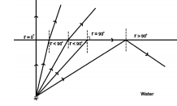
When the angle of incidence exceeds the value of critical angle, the refracted ray is not possible. Since r is greater than 90 degree the ray is totally reflected back to the same mediumBracket OPEN water bracket closed. This is called as total internal reflection.
In order to achieve total internal refelection the following conditions must be met.
Light must travel from denser medium to rarer medium. Bracket OPEN Example: From water to air bracket closed.
The angle of incidence inside the denser medium must be greater than that of the critical angle.
Mirage: On hot summer days, patch of water may be on the road. This is an illusion. In summer, the air near the ground becomes hotter than the air at higher levels. Hotter air is less dense, and has smaller refractive index than the cooler air.
Thus, a ray of light bends away from the normal and undergoes total internal reflection. Total internal reflection is the main cause for the spectacular brilliance of diamonds and twinkling of stars.
Figure 6.13 Mirage image was given below
Optical fibres: Optical fibres are bundles of high-quality composite glass/quartz fibres. Each fibre consists of a core and cladding. The refractive index of the material of the core is higher than that of the cladding. Optical fibres work on the phenomenon of total internal reflection. When a signal in the form of light is directed at one end of the fibre at a suitable angle, it undergoes repeated total internal reflection along the length of the fibre and finally comes out at the other end.
Optical fibres are extensively used for transmitting audio and video signals through long distances. Moreover, due to their flexible nature, optical fibres enable physicians to look and work inside the body through tiny incisions without having to perform surgery.
Figure 6.14 Optical fibres was given below
Box item open
An Indian-born physicist Narinder Kapany is regarded as the Father of Fibre Optics box item ends
Light is a form of energy which produces the sensation of sight.
Laws of reflection:
1 bracket closed Angle of incidence is equal to the angle of reflection
2 bracket closed The incident ray, the normal to the point of incidence and the reflected ray, all lie in the same plane.
The distance between the pole and the principal focus of the spherical mirror is called focal length. f = R by 2, where R is the radius of curvature of the mirror.
Mirror equation: The relation between u, v and f of a spherical mirror is known as mirror formula
1 by u plus 1 by v =1 by f
Magnification: m = height of the image h2 by height of the object h1
Laws of refraction: The incident ray, the refracted ray and the normal to the surface separating two medium lie in the same plane. The ratio of the sine of the incident angle Bracket OPEN I bracket closed to the sine of the refracted angle Bracket OPEN r bracket closed is constant
That is, mew = sine i by sine r = constant
The bending of light when it passes obliquely from transparent medium to another is called refraction.
When the angle of incidence exceeds the value of critical angle the refracted ray is impossible. Since r is greater than 90 degree refraction is impossible and the ray is totally reflected back to the same medium Bracket OPEN denser medium bracket closed. This is called as total internal reflection.
Spherical Mirror
A reflecting surface which is a part of a sphere whose inner or outer surface is reflecting.
Concave Mirror
Part of a hollow sphere whose outer part is silvered and/or inner part is the reflecting surface.
Convex Mirror
Part of a hollow sphere whose inner part is silvered and/or outer part is the reflecting surface.
Centre of curvature
The centre of the hollow sphere of which the spherical mirror forms a part.
Radius of curvature
The radius of the hollow sphere of which the spherical mirror forms a part.
Pole
The midpoint of the spherical mirror.
Aperture
The diameter of the circular rim of the mirror.
Principal axis
The normal to the centre of the mirror is called the principal axis.
Principal focus
The point on the principal axis of the spherical mirror where the rays of light parallel to the principal axis meet or appear to meet after reflection from the spherical mirror.